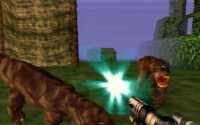

|

Review

Game Type: First-Person Maze
It borrows elements from King's Field and has an interesting use for
the analog stick but all things considered Turok is just another Doom
clone with fancy graphics.
Gameplay: 80/100
Well, Acclaim's done it again; another carbon copy release in a
safe and profitable genre. Turok is of considerably higher quality than
their standard crap, though. Once you get the hang of it Turok is fairly
playable. But it's no Doom. The enemies seem intelligent but spend half
their time running around instead of shooting at you, allowing you to
pick them off at your leisure.
The control takes a bit of getting used to as well. The analog stick
makes your character look upwards or downwards but since you also use
it to turn the camera is rarely level (beware if you're prone to motion
sickness). The C buttons are used to move forward and backward and to
strafe which takes a little getting used to. You'll also have your hands
full with pressing R to jump and Z to fire. Believe it or not it is
possible to use the controller with some proficiency but a configuration
option would've been nice.
Graphics: 90/100
This is about the only area in which Turok stands out from the crowd,
but it's the all-important one that ensures big sales to the kiddies and
brisk business at the rental store. Indeed, these are some of the
fanciest graphics ever seen on a console system. Gameplay of course
demands that you be trapped in claustrophobic mazes, but they're
claustrophobic mazes covered in lush greenery. The animation on the
polygonal enemies is simply amazing; the humanoids lean into turns when
they run and the dinos' legs collapse when you shoot them. Of course,
all this involves so many polygons that there is a tradeoff. You won't
be able to see any popup, but that fog is awfully thick...
Sound: 80/100
The sound effects and music are of very high quality. My biggest
gripe with the audio is that the background noises (roaring animals,
chattering monkeys) are so loud and frequent that you'll spend a lot of
time looking around to see if you're being attacked.
Overall: 80/100
All said, Turok is more a graphics showcase than anything. The control
is just a little too awkward and the enemies too dumb to elevate it to
Doom's level. If you purchase it you won't regret it immediately but it
will probably never leave the shelf again once you beat it. I do,
however, highly recommend it as a rental, because the eye candy is just
amazing.
|